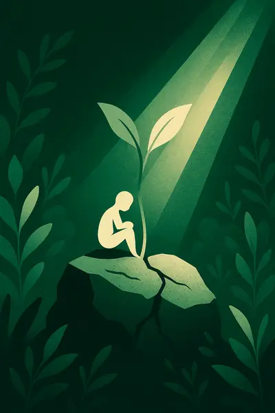
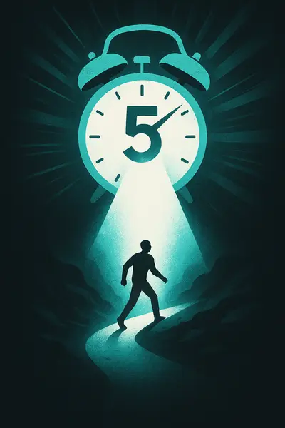
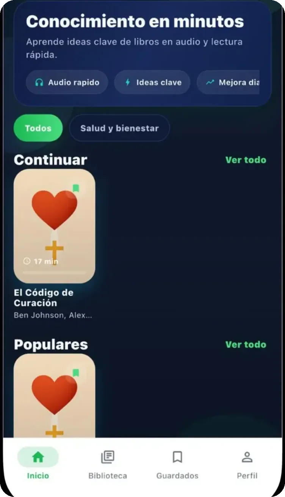

Escúchalo o léelo
Cada sección tiene texto y audio: es lo más cerca que hay de un podcast de libros en español, pero sin relleno.
289 libros · 221 autores · en español
Un Zap son las ideas clave de un libro de no ficción, contadas en audio en unos 20 minutos y cerradas con ejercicios para aplicarlas. Lo desbloqueas una vez y es tuyo para siempre.
0:00 / 0:13
Es la cortinilla con la que cierra cada Zap, trece segundos.
Desde $8.95 MXN por Zap en el paquete de 20 · sin suscripción · para iPhone, iPad y Mac con Apple Silicon
No te faltó interés: te faltaron veinte minutos seguidos. Un Zap te da lo que te ibas a llevar de ese libro —sus ideas clave, con sus ejemplos y un ejercicio para aplicarlas— en el tiempo que dura un trayecto. Y si te quedas a la mitad, la app retoma donde lo dejaste.
El Zap más largo del catálogo dura veinticuatro minutos. El promedio, casi veintiuno.
Cada sección tiene texto y audio: es lo más cerca que hay de un podcast de libros en español, pero sin relleno.
Introducción, tres capítulos, conclusión y ejercicios.
1 crédito desbloquea el Zap y se queda en tu cuenta.
Un Zap real
Cada Zap termina con ejercicios. Para eso lo escuchaste.
«El peligro del ego no es que te haga sentir superior a los demás, sino que te hace confundir la narrativa sobre ti mismo con el progreso real.» Del Zap de Ego es el Enemigo, de Ryan Holiday
desliza el dedo
Lo mismo, leído y escuchado. Descúbrelo con el puntero o el dedo.
libros publicados
secciones, todas con audio
aprendizajes clave con audio
autores
minutos por Zap, en promedio
entre 14 y 24
Escritos y narrados en español. Los 289.
Cada barra es un Zap publicado: su altura son sus minutos y cada bloque, un estante.
Hábitos Atómicos · Los 7 Hábitos de la Gente Altamente Efectiva
33 librosInnovación Abierta · El Futuro es más Rápido de lo que Piensas
31 librosPensar Rápido, Pensar Despacio · El Hombre en Busca de Sentido
30 librosSapiens: De Animales a Dioses · El Arte de la Guerra
26 librosPadre Rico Padre Pobre · Pequeño Cerdo Capitalista
17 librosLeads de $100M · Enganchado
17 librosEl Milagro de la Atención Plena · La Solución Mindfulness
15 librosHáblame Bonito · Los 5 Lenguajes del Amor
11 librosShoe Dog · Steve Jobs
10 librosSprint · La Única Cosa



Ilustraciones propias de Zapienz, una por Zap. No son portadas de editorial. Pasa el cursor para ver el color original.Tócalas para ver el color original.
Lo que dicen quienes ya escuchan
Zapienz tiene 3 calificaciones en el App Store de México, promedio 5 estrellas, y dos de ellas traen texto. Están aquí las dos, citadas literal. No hay una tercera que enseñarte y no vamos a inventarla.
★★★★★
«Lo recomiendo !»
“Hoy en día los podcast me ayudado a aprender de una manera más rápida y diferente y sin duda esta aplicación lo ha hecho aún mejor…”
★★★★★
«Me encantó la app»
“Es muy práctico escuchar el audio mientras voy manejado y los libros que tienen están muy interesantes ✨”
$59 · $99 · $179
1 crédito = 1 Zap para siempre. 5 créditos $59, 10 por $99, 20 por $179.
$129 al mes · $999 al año
Acceso completo a todo el catálogo sin gastar créditos.
Precios en pesos mexicanos, en App Store. La cuenta es gratis; los Zaps se desbloquean con créditos o Premium.
No. Es un Zap de unos 20 minutos con las ideas clave, contado con apoyo de inteligencia artificial y revisión editorial. Sirve para aprender de un libro en 20 minutos, pero no sustituye la obra original ni reproduce obras completas.
Sí, los 289. Locución en español, no doblaje ni traducción automática leída en voz alta.
No. 1 crédito, 1 Zap, y el Zap se queda en tu cuenta. Premium existe si quieres los 289 de una vez, pero no es la única puerta.
Sí. Las seis secciones vienen en texto y en audio; eliges por sección, no de una vez para todo el Zap.
Todavía no; escríbenos a contactozapienz@gmail.com y te avisamos.
Se retoma donde lo dejaste, en la sección donde te quedaste.